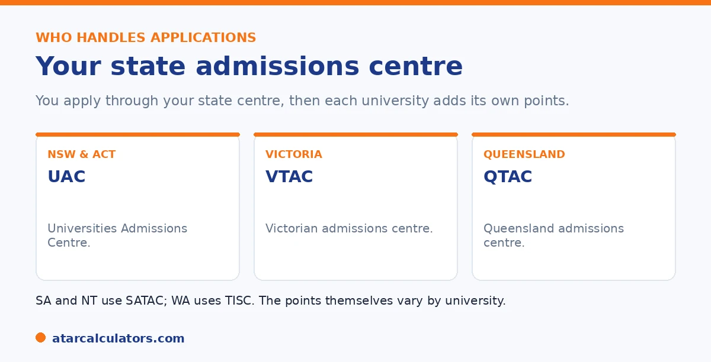

Here is the short version. You apply for university through your state admissions centre. That is UAC in NSW and the ACT, VTAC in Victoria, QTAC in Queensland, SATAC in South Australia and the Northern Territory, and TISC in Western Australia. Each university then sets its own adjustment schemes. So bonus points vary by university and by course. The types are broadly similar across states. But the amounts and rules differ. So always check the specific university.
Students often ask which state gives the most bonus points. There is no clean answer, because bonus points are set by each university, not by the state.
Below is how the system works across states, and how to compare. To estimate yours, use our bonus points calculator.
Key takeaways
- You apply through your state admissions centre.
- NSW and ACT use UAC; Victoria uses VTAC; Queensland uses QTAC.
- SA and NT use SATAC; WA uses TISC.
- Each university sets its own adjustment schemes.
- The types are similar across states; amounts differ.
- Always check the specific university and course.
The state admissions centres
The first thing to understand is who you apply through. Each state and territory has a Tertiary Admissions Centre that processes university applications.

These are UAC for NSW and the ACT, VTAC for Victoria, QTAC for Queensland, SATAC for South Australia and the Northern Territory, and TISC for Western Australia. They handle your application and issue some adjustments.
Bonus points are set by the university
Here is the key point. The state admissions centre processes your application, but the bonus points themselves are set by each university. So two universities in the same state can offer quite different schemes.
That is why there is no single answer to which state gives the most. It depends on the university and the course, not just the state. Your selection rank can differ for each.
How NSW, Victoria and Queensland compare
Broadly, the types of bonus points are similar across states. Most universities, wherever they are, offer subject adjustments, location adjustments, an equity scheme, and sometimes elite athlete schemes.
What differs is the detail: how many points each is worth, which subjects count, and how the schemes are applied. So a useful comparison is course by course, not state by state. Treat any blanket claim about a state with caution.
Want to estimate your bonus points?
Try the bonus points calculator →Applying to another state
You can apply to universities in another state, usually through that state's admissions centre. If you do, check how your results are treated, since subject adjustments are not always applied automatically for interstate applicants.
In that case you may need to contact the university to have subject adjustments allocated. It is worth checking early, so you do not miss points you qualify for.
Interstate applications add a layer worth planning for. This is because the bonus-point system is run state by state and does not always travel with you automatically. Each state has its own admissions centre. When you apply across a border, the receiving centre may not automatically map your subjects to that university's adjustment schemes the way it would for a local student. The result is that subject bonuses you would get at home can quietly go unallocated unless you flag them, and equity or regional schemes may work differently or need a separate claim. None of this is a barrier to applying interstate. Plenty of students do. And the same broad logic of adjustment factors applies everywhere. It just means the responsibility shifts onto you to make sure your entitlements are counted. The practical steps are simple. Identify early which universities and courses you are applying to in the other state. Check that state's admissions centre and each university's adjustment pages. Then contact the university directly, well before offers, to confirm how your interstate results and any bonuses will be treated. It is also worth confirming eligibility for location-based schemes. This is because some are defined by residency or school within that state. A short check ahead of time protects points that could make the difference at a course cut-off. It avoids the disappointment of discovering, after offers, that adjustments you qualified for were never applied.
How to check for your course
The reliable approach is the same everywhere. Find the specific course at the specific university, and read its adjustment factors page. That tells you exactly what applies, rather than a general rule.
Then check your state admissions centre for anything you need to apply for separately. For the full picture, see our bonus points guide.
How New South Wales handles bonus points
In New South Wales and the ACT, adjustments are applied through UAC, which adds them to your ATAR to form a selection rank for each course. Individual universities set their own subject, regional and equity adjustment schemes within this, and UAC runs the Educational Access Scheme.
So in NSW, the mechanics run through UAC, but the specific adjustments depend on each university and course. Check both UAC’s schemes and your target university’s adjustment information.
Victoria and Queensland
In Victoria, VTAC administers adjustments, including its equity scheme, often referred to as SEAS, alongside university-set subject and location adjustments. In Queensland, QTAC plays the equivalent role, applying its own schemes and caps.
So the centre differs by state, VTAC in Victoria and QTAC in Queensland, and each runs its own equity scheme and adjustment rules. The principle is the same everywhere, but the schemes and caps differ.
South Australia, WA and the rest
In South Australia and the Northern Territory, SATAC administers adjustments, and in Western Australia, TISC does. Each applies its own subject, regional and equity schemes, with its own caps, set together with the universities in that state.
So wherever you are, an admissions centre applies adjustments to form your selection rank, but the details vary. The safest approach is always to check your own state’s centre and your target university’s schemes for the specific courses you want.
Common questions
How do bonus points differ by state?
The types are broadly similar, but bonus points are set by each university, not the state. You apply through your state admissions centre, then each university adds its own schemes, so amounts and rules differ by university and course.
Do NSW, VIC and QLD give the same bonus points?
The categories are similar, but the amounts and rules differ. Each university sets its own schemes, so two universities even in the same state can differ. There is no single state-wide bonus points figure.
Which state gives the most bonus points?
There is no clean answer, because bonus points are set by each university, not by the state. The best comparison is course by course at specific universities, rather than state by state.
Which admissions centre do I apply through?
UAC for NSW and the ACT, VTAC for Victoria, QTAC for Queensland, SATAC for South Australia and the Northern Territory, and TISC for Western Australia. They process your application and issue some adjustments.
Can I apply to universities in another state?
Yes, usually through that state's admissions centre. Check how your results are treated, since subject adjustments are not always applied automatically for interstate applicants. You may need to contact the university.
Estimate your bonus points
See how many adjustment factors you might get and your likely selection rank. Free, and no signup.
Open the bonus points calculator →Related guides
This guide is general information for students and parents, not formal admissions advice. Adjustment factors, schemes, caps and course cut-offs are set by each university and can change every year. They differ from one institution to another, and from course to course within the same institution. Always confirm the current details with the specific university and your state admissions centre (UAC, VTAC, QTAC, SATAC or TISC). A useful starting point is UAC's guide to selection rank adjustments. Reviewed by the ATARCalculators Editorial Team.